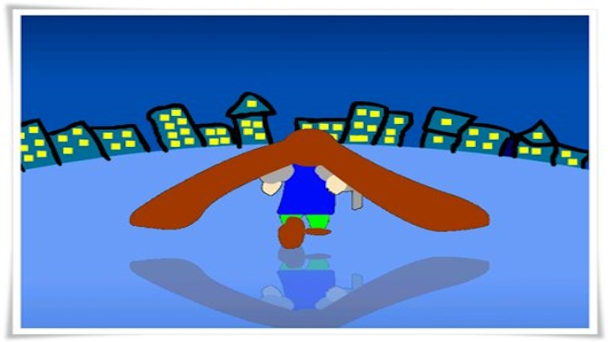
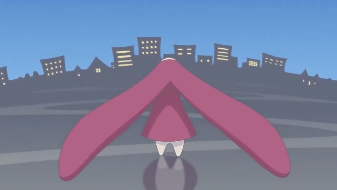

Datos Curiosos de PiX Pang
Personajes navideños
En PiX Pang 2.0 y 2.1, a partir del 24 de diciembre se activa un modo especial donde los personajes se vuelven navideños. Si no me equivoco, esto dura hasta los primeros días de enero.
Tiempo bala / Ancla
Resulta que el sonido de este powerup está generado con la boca de panreyes + edición de audio.
Modo Debug en PiX Pang 2.0
Hay un modo debug que se activa pulsando las siguientes teclas: D + B + G y después la M. (DBG de debug, y M de mode)
Final de PiX Pang
El final está inspirado en un anime llamado Chobits:


Página 5 de 5